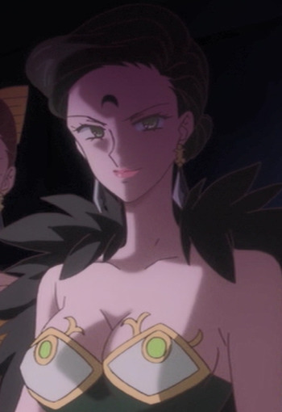

|
Haruka Tenoh |
- Sailor Moon S
- Sailor Moon S: The Movie
- Sailor Moon Super S: The Movie
- Sailor Moon Super S Special
- Sailor Moon Sailor Stars
- Sailor Moon Sailor Stars: Hero Club
- Sailor Moon S Memorial
- Sailor Moon Sailor Stars Memorial
|
Haruka Tenoh/Sailor Uranus is member of the Outer Senshi Group. Haruka is a stubborn, protective person, but strong-willed, capable, charming and even doting. She is a faster runner and driver with a love of speed. She is a female but sometimes mistaking as a male. She is in a romantic relationship with Michiru Kaioh. |
|  |
Petz |
- Sailor Moon R
- Sailor Moon R Memorial
|
Petz is the oldest of the Ayakashi sisters. Her magical power ic called Dark Thunder. She is the counterpart of Makoto Kino/Sailor Jupiter. She clashes with Calaveras, but the majority of both women's operations end up with them working together. She is very proud and is willing to step on others to others to achieve glory and power. |
 |
Sou |
- Kino's Journey: The Beautiful World - The Aminated Series
|
Sou is a sentient motorrad like Hermes. |
 |
Yue |
- Cardcaptor Sakura
- Cardcaptor Sakura Movie 2: The Sealed Card
- Cardcapter Sakura: Clear Card
|
Yue is the one of two Guardians of the Clow Cards. He is the judge who will test the candidate to became the next Master of the Clow. He acts cold, aloof and more serious. |
 |
Yukito Tsukishiro |
- Cardcaptor Sakura
- Cardcaptor Sakura Movie 1
- Cardcaptor Sakura Movie 2: The Sealed Card
- Cardcaptor Sakura: Clear Card Prologue
- Cardcapter Sakura: Clear Card
|
Yukito Tsukishiro is the best friend of Touya Kinomoto and Sakura's object of affection. His alter-ego is Yue, the Guardian of the Moon. He is kind and gentle. He loves food and has an enormous appetite. |